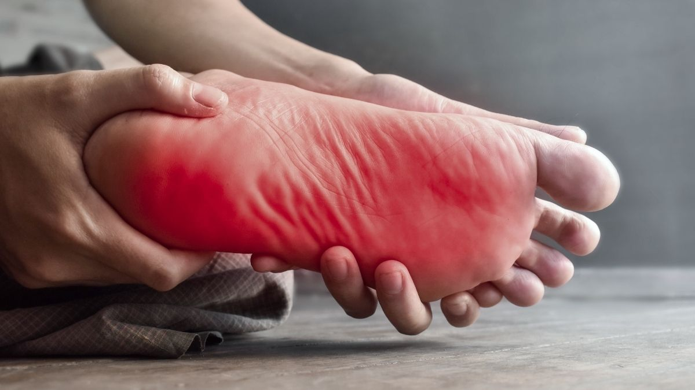
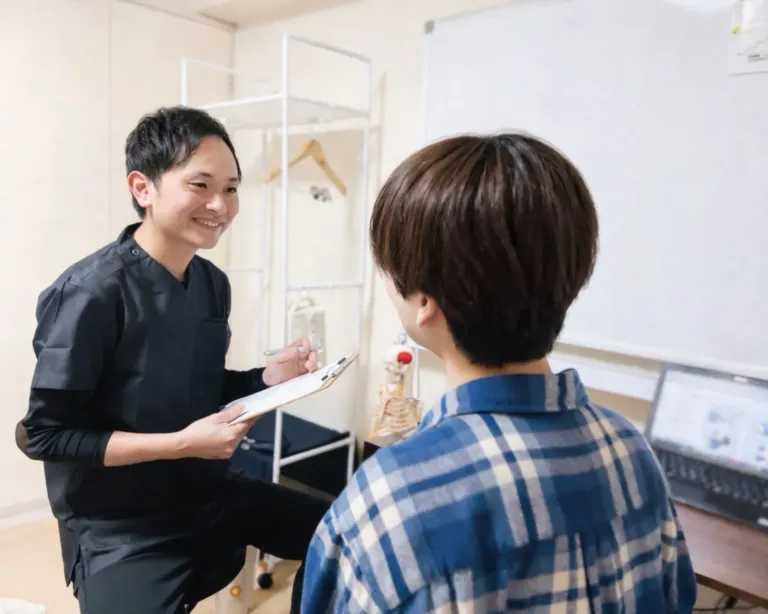
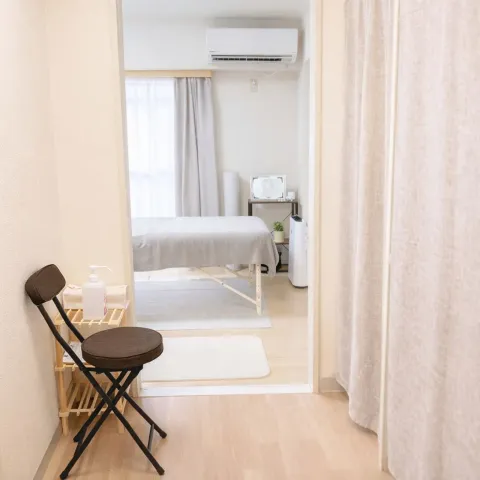
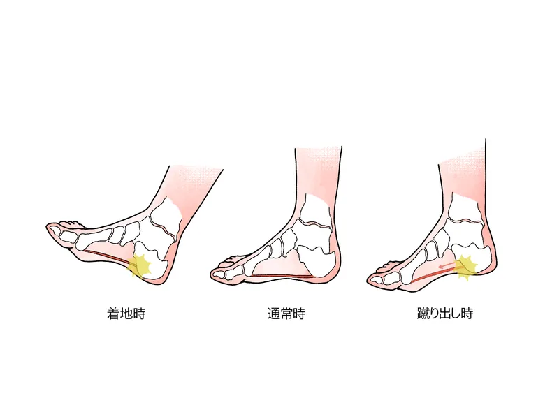

足裏の痛みや歩きづらさが出る場面を整理します
朝の一歩目、長く歩いたあと、立ち仕事でのつらさなど、気になる場面を確認しながら進めます。
「朝起きて最初の一歩が激痛」「歩くたびにかかとが痛い」——
その痛み、足裏だけの問題ではないかもしれません。
朝起きて最初の一歩でかかとに激しい痛みが走る
長時間立っていると足の裏が痛くなる
階段の下り・坂道で足裏に負担を感じる
インソールや湿布では一時的にしか楽にならない
安静にしていると痛みが引くが、歩き始めるとすぐ再発する
かかとだけでなく、ふくらはぎや膝にも負担を感じる

朝の一歩目、長く歩いたあと、立ち仕事でのつらさなど、気になる場面を確認しながら進めます。

足裏だけでなく足首やふくらはぎの状態も含めて確認し、その日に無理のない進め方をご提案します。

歩くことへの不安も含めてご相談いただけるよう、初めての方にも落ち着いて過ごしやすい環境を整えています。
足底筋膜炎の多くは、足裏だけの問題ではありません。足首の硬さ・ふくらはぎの過緊張（ガンバリ筋）・股関節のインナーマッスル機能低下（サボり筋）が連鎖することで、足底への負荷が慢性的に高まります。
インソールや足裏マッサージで局所を和らげても、この「下肢全体の連動の乱れ」を整えない限り、朝一歩目の激痛は繰り返されます。
また、痛みをかばった歩き方が膝・腰・股関節にも負担を広げるケースが少なくありません。
足底まわりの負担を減らし、安定させ、正しい使い方を身につける3段階で根本改善を目指します

足首・ふくらはぎ・股関節の可動域を評価。硬くなった組織をほぐし、足底への過剰な負荷の原因を特定します。
足部アーチを支えるインナーマッスル（サボり筋）を再教育。股関節まわりの安定性を取り戻すことで、足底への負担を根本から軽減します。
痛みを生む歩き方・立ち方のクセを修正。再発しにくい足の使い方を日常生活に落とし込みます。
「かかとが痛い」という訴えで来院される方の多くは、足だけでなく足首・膝・股関節・骨盤の動きに問題を抱えています。
足底筋膜炎は「足裏の炎症」と思われがちですが、その炎症を引き起こしている力学的な連鎖を断ち切らない限り、本当の意味での回復は難しい。
14年の臨床経験とMSMメソッドで、あなたの痛みの根っこをしっかり診ます。
症状の改善と再発予防に向けて、以下のペースを目安に進めていきます。
症状の程度にもよりますが、多くの方は週1〜2回の施術を1〜2ヶ月継続することで、朝一歩目の痛みが軽減し始めます。その後は2週に1回→月1回とペースを落とし、再発予防の段階へ移行します。
インソールは足のアーチを補助する道具ですが、足首・膝・股関節・骨盤の動きの問題を根本から解決するものではありません。当院では足だけでなく下肢全体の連動を評価し、痛みの本当の原因に働きかけます。
足底筋膜炎は「休むだけ」では再発しやすい症状です。足底への負荷を生む動作パターン——足首の硬さ、ふくらはぎのガンバリ筋過緊張、股関節のサボり筋機能不全——を整えることが根本改善の鍵です。MSMメソッドでその連鎖を断ち切ります。
「自分の症状は良くなるのだろうか」「どんな施術をされるのか不安」——
そう思っている方こそ、まずはお気軽にご相談ください。
初回のカウンセリングで、あなたの状態を丁寧に確認したうえで、施術方針をご提案します。
柏市をはじめ、松戸市・我孫子市・取手市・野田市・流山市・守谷市など近隣エリアからもご来院いただいています。